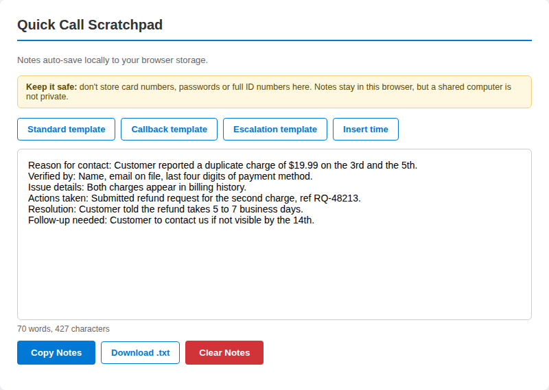
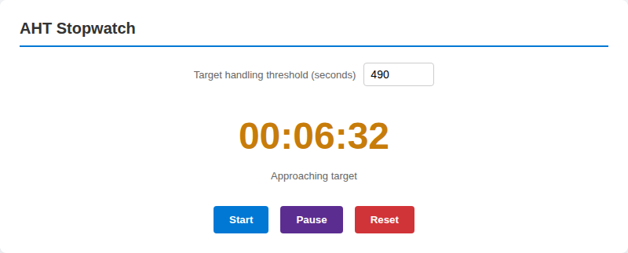
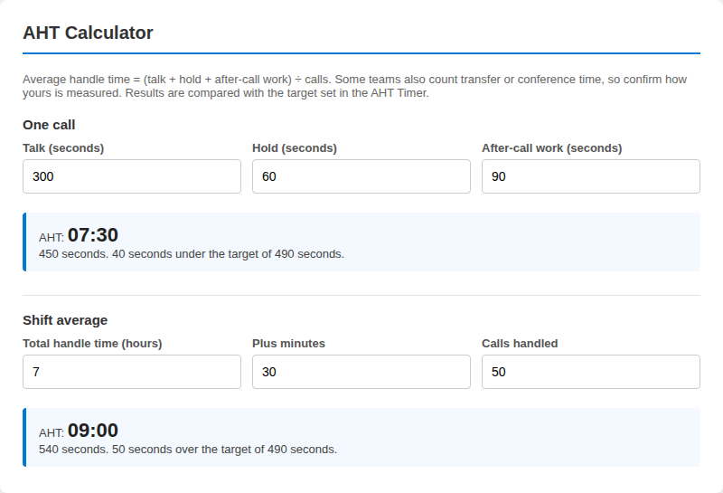
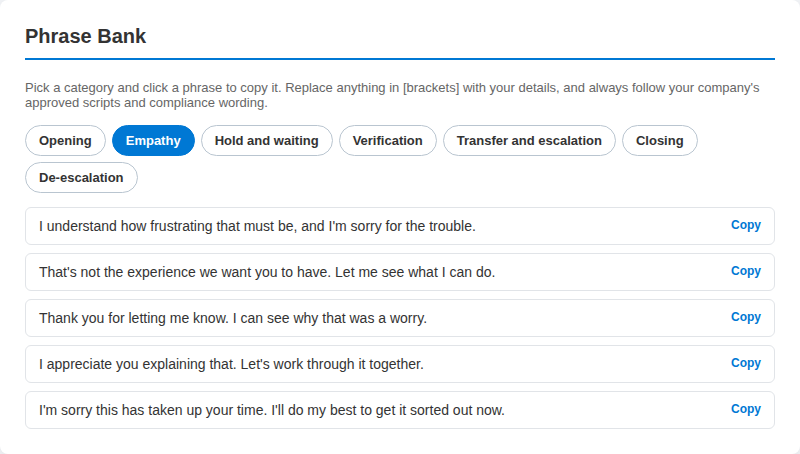
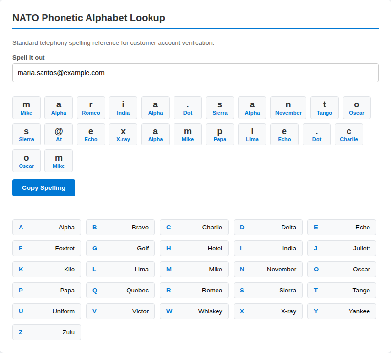
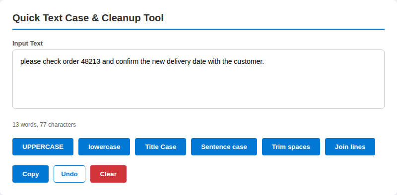
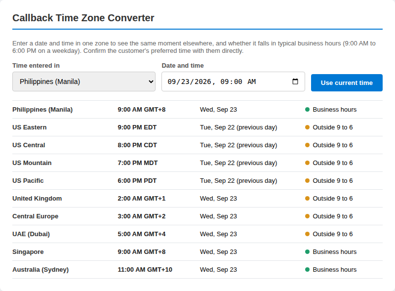

Agent Desk has two parts: seven small tools that run in your browser, and Power BI reports you can open from the same sidebar. This guide explains each one.
In brief
- Everything you type stays in your browser. Nothing is sent to a server.
- The tools and reports live in the workspace, which you open from the home page.
- The reports are hosted by Microsoft Power BI, so they need a network that allows powerbi.com.
Call Scratchpad
A plain notepad for calls with Standard, Callback and Escalation templates, an Insert time button, a live word count, and Copy and Download .txt buttons. Notes save automatically in this browser.

- Open the Call Scratchpad from the sidebar.
- Pick a template, or start typing.
- Use Insert time to add a time stamp in square brackets.
- Copy the notes into your ticketing system, or download them as a .txt file.
Tip: Do not store card numbers, passwords or full ID numbers here. Notes stay in this browser, but a shared computer is not private.
AHT Timer
A stopwatch measured against a target in seconds (the default is 490, about 8 minutes 10 seconds). The status reads On pace, Approaching target once you pass 75 percent of the target, and Over target, in words as well as colour. It runs on the clock, so it stays accurate in a background tab.

- Set your target in seconds.
- Press Start when the call begins and Pause to stop the clock.
- Press Reset to clear it for the next call.
Tip: Your target is remembered on this device, and the AHT Calculator compares its results with it.
AHT Calculator
Average handle time is talk time plus hold time plus after-call work, divided by the number of calls. The tool works out one call, or the average across a shift.

- For one call, enter talk, hold and after-call work in seconds.
- For a shift, enter total handle time in hours and minutes, then the number of calls.
- Read the result and how far it sits above or below your target.
Tip: Some teams also count transfer or conference time. Confirm how your team measures it.
Phrase Bank
Ready-made wording in seven groups: opening, empathy, hold and waiting, verification, transfer and escalation, closing and de-escalation. Click a phrase to copy it.

- Choose a category.
- Click a phrase to copy it.
- Replace anything in [brackets] with your details before you send it.
Tip: Always follow your company's approved scripts and compliance wording.
NATO Phonetic Chart
Type a name, email address or reference code and see every character with its NATO word. Digits are spoken as words (9 is Niner), and symbols such as @ and . are named too.

- Type the text you need to spell.
- Read the words aloud, character by character.
- Press Copy Spelling to paste it into your notes.
Tip: The full A to Z chart sits below the speller for quick reference.
Text Formatter
Fix capitalization, extra spaces and stray line breaks. Choose UPPERCASE, lowercase, Title Case, Sentence case, Trim spaces or Join lines, and use Undo if the result is wrong.

- Paste your text into the box.
- Press the formatting button you need.
- Press Copy, or Undo to go back one step.
Tip: Check names and product terms after Title Case or Sentence case, since automatic capitalization can get them wrong.
Callback Time Zones
Enter a date and time in one zone and see the same moment in ten others, with a note on whether it falls in typical business hours (9:00 AM to 6:00 PM on a weekday).

- Choose the zone your time is in.
- Enter the date and time, or press Use current time.
- Read the list: each row shows the local time, the date and Business hours, Weekend or Outside 9 to 6.
Tip: Confirm the customer's preferred time with them directly. Daylight saving changes are handled by your browser.
Power BI reports
Open the workspace and choose a report under Dashboards: Champion Challenger, Productivity Report or GET Agent Performance. The workspace loads the report in a frame and keeps the sidebar beside it.
A champion-challenger comparison measures the approach you use today (the champion) against an alternative (the challenger) under the same conditions, so you can see whether the change is worth making. When you read any comparison, check that both groups cover the same period and a similar volume before you draw a conclusion.
The reports summarize metrics for travel locations, products and services. Numbers on a dashboard describe past activity, so use them alongside your team lead's guidance rather than in place of it.
If something does not load
- The report frame stays empty. After about 12 seconds the workspace offers Try again and Open in a new tab. Power BI may be blocked on your network.
- Notes or your timer target are not remembered. Your browser may be blocking storage, or you may be in a private window. The tools still work for the current visit.
- Something looks wrong. Tell us which tool and which browser you were using.